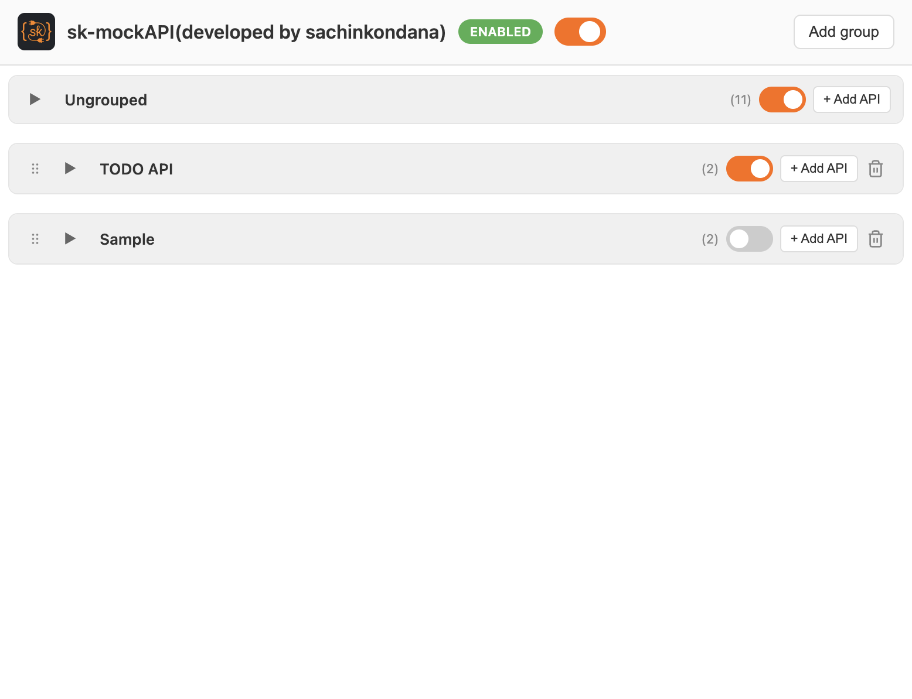
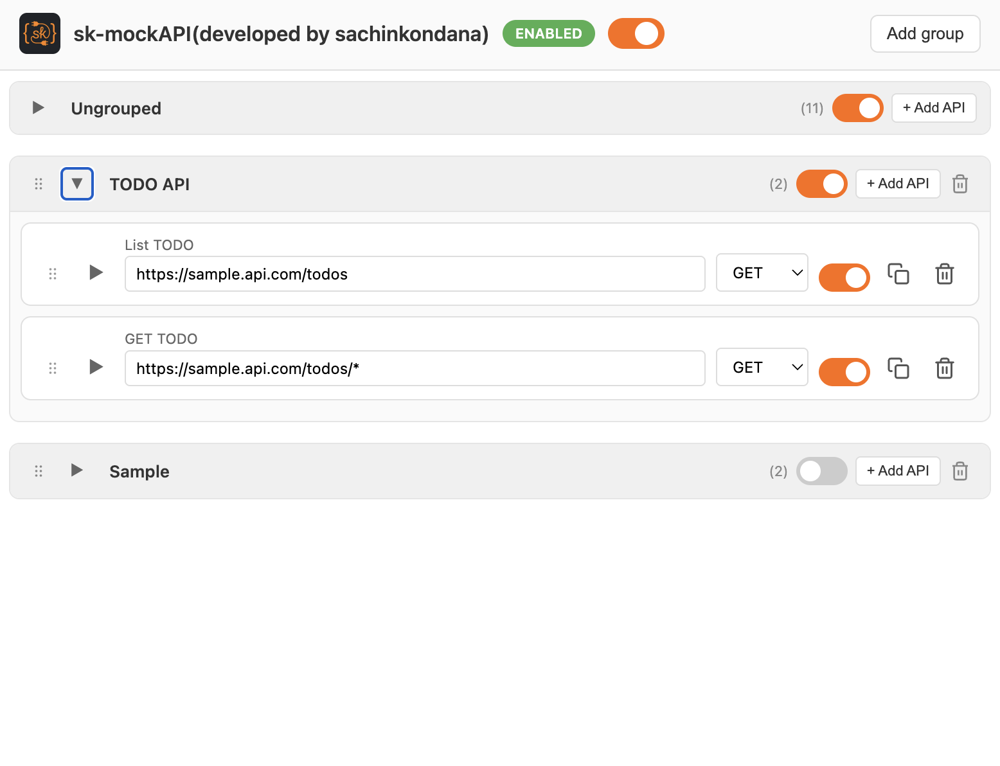
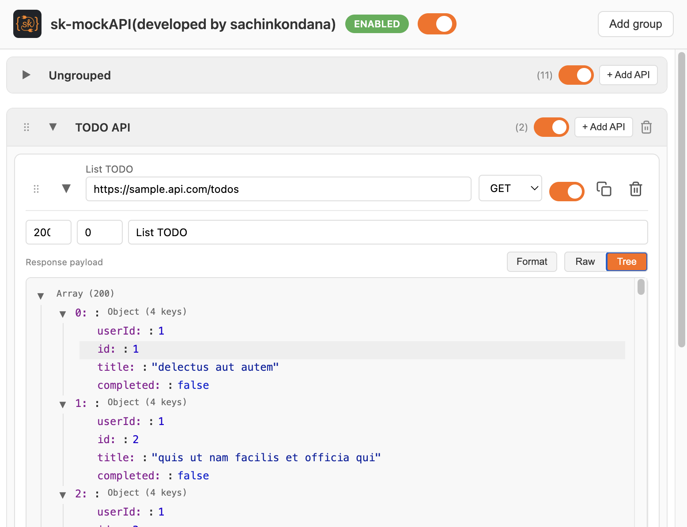

Chrome extension
Mock any API.
No backend. No deploy.
Intercept requests in the browser and return your own responses. Build and test frontends without waiting on APIs.
{
"id": "123",
"name": "Sample News",
"status": "active"
}Everything you need to mock
Control responses per URL, method, and more — all from a simple popup.
-
URL patterns
Match by path:
/api/*,/news/*/spec. Only the requests you choose get mocked. -
Custom JSON
Set the exact response body, status code, and optional delay for each rule.
-
Toggle on/off
Enable or disable mocking globally with one click. No need to reload the page.
-
Runs locally
All rules live in your browser. No data sent to any server. Open source.
Perfect for QA and testing
QA can use this extension to check web app behavior with different types of data without actually creating that data in the backend.
- Verify flows with edge-case data (empty lists, errors, long text) by mocking responses — no backend setup needed.
- Test different scenarios (e.g. success vs. 4xx/5xx) by switching rules or response bodies in the popup.
- Run consistent test cases across environments without depending on real API data or seed scripts.
Perfect for developers
Without backend support, you can create API responses without actually running servers or any backend — which speeds up development.
- Build and integrate frontends against realistic responses while the API is still in progress or unavailable.
- No local servers, no deploy — define URL, method, and JSON in the popup and start developing immediately.
How it works
-
1
Install the extension
Add sk-mockAPI from the Chrome Web Store or load it unpacked for development.
-
2
Add rules in the popup
Click the extension icon and define URL patterns, HTTP method, status code, and response body (JSON).
-
3
Browse as usual
When your app hits a matching request, the extension returns your mock instead. Toggle mocks on or off anytime.
How to use it
Configure mock rules in the extension popup and edit each rule’s URL, method, and response.
Popup: groups and global toggle
Click the extension icon to open the popup. Use the global toggle to enable or disable all mocks. Organize rules in groups (e.g. Ungrouped, TODO API). Use Add group or + Add API to create new groups or rules.


Popup: list of rules in a group
Expand a group to see its mock APIs. Each row shows the rule label, URL, and HTTP method. Turn a rule on or off with its switch. Use the copy and delete icons to duplicate or remove a rule.
Editing a rule: URL, method, response
Expand a row to configure it: set the
URL pattern (e.g.
/api/*), choose the
HTTP method (GET,
POST, etc.), and optionally set status code and delay. In
Response payload,
switch between Format, Raw, and Tree and enter the JSON body
that the mock should return.

Ready to mock?
Install the extension and start returning mock responses in seconds.
Not in the Store yet?
Download the extension zip
from GitHub, or build from the repo and load unpacked from
dist/extension.